作者：创世魂
● 概述
本组件主要用于日期选择。
● 今天(写)
帮助文档如下图：
通过本属性可以设置当前组件所显示的日期，属性值为小数时间，提供0表示为系统当前日期。
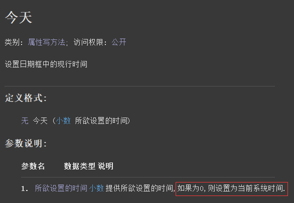
代码编写如下图：
1、首先利用“增减时间()”方法对当前时间进行增加一天操作。
2、随后将增加后的时间赋值给本属性。
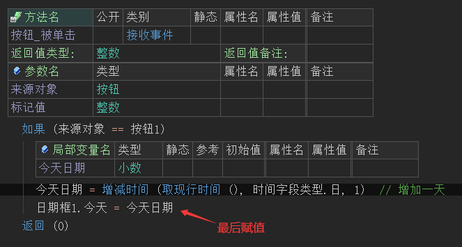
运行效果如下图：
最终可以看到日期框的日期增加了一天。
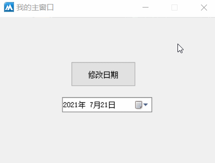
● 最大日期(写)
帮助文档如下图：
通过本属性可以设置当前日期框显示的最大日期。
注意：单位不是时间戳，是小数时间，提供0表示无限制。
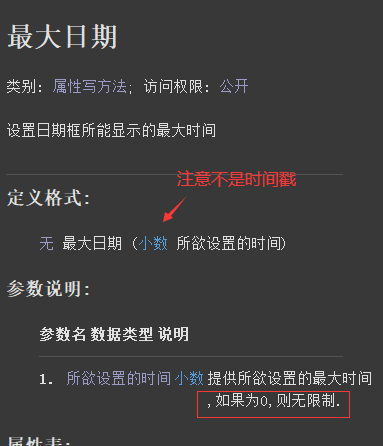
代码编写如下图：
1、首先定义“最大日期”的小数变量，利用“增减时间()”方法增加两天时间为当前最大时间。
2、将增加后的时间赋值给本属性。
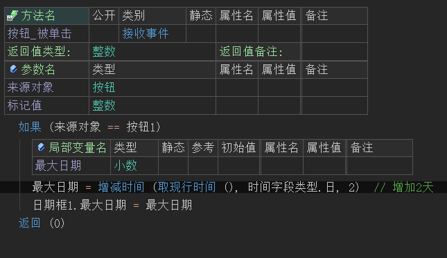
运行效果如下图：
最终可看到按钮点击后日期框的最大日期停留在了两天后。
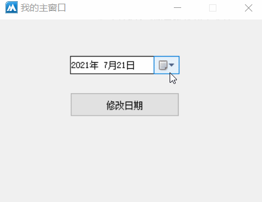
● 最小日期(写)
帮助文档如下图：
通过本属性可以设置当前组件能显示的最小日期。
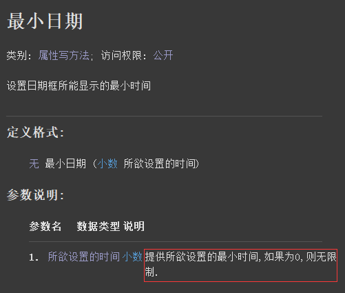
代码编写如下图：
1、首先定义“最小日期”的小数变量，利用“增减时间()”方法减少两天时间为当前最小时间。
2、将减少后的时间赋值给本属性。
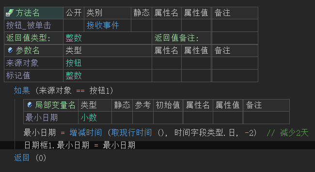
运行效果如下图：
最终可看到按钮点击后日期框的最小日期停留在了两天前。
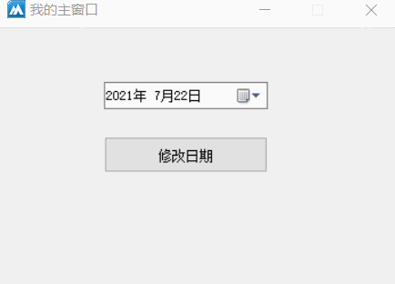
● 附件类型(写)
帮助文档如下图：
通过本属性可以设置日期框的调节样式，共有两个样式分别为“下拉月历”和“调节器”，如果不设置默认为“下拉月历”。
注意：本属性只能在属性表格中调用。
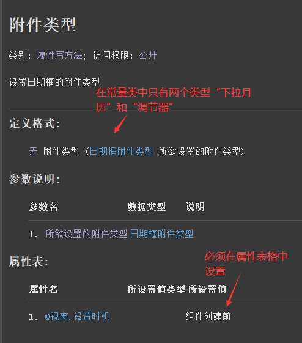
代码编写如下图：
直接在当前组件的属性栏设置本属性并选择“调节器”样式。
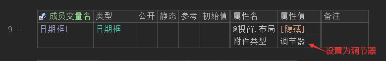
运行效果如下图：
最终可以看到日期框变成调节器样式，可通过调节器按钮去调节日期。
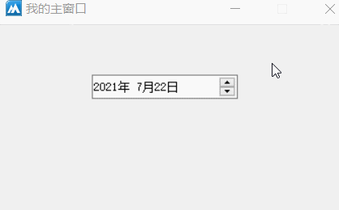
● 置日期范围
帮助文档如下图：
通过本方法可以同时设置显示的最大日期和最小日期。
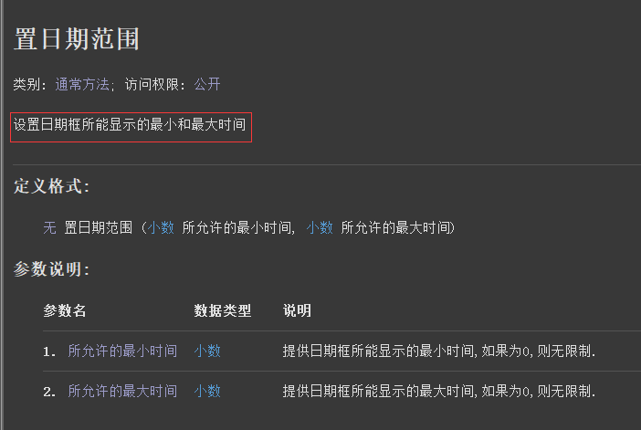
代码编写如下图：
1、首先利用“增减时间()”方法将最小和最大日期分别定义出来。
2、然后将定义出来的时间填写到对应的参数中即可。
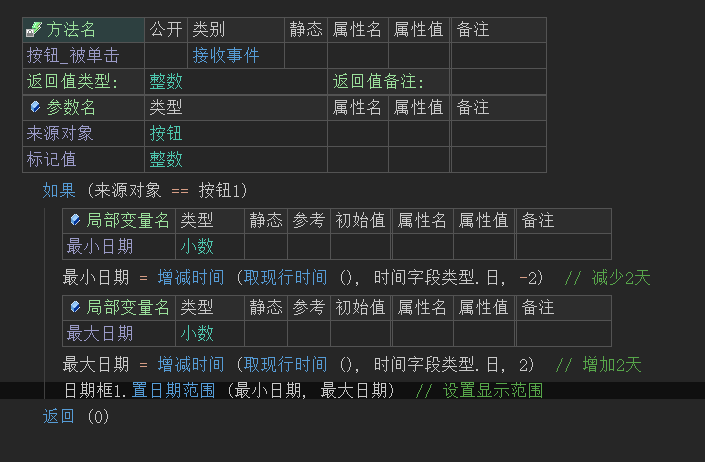
运行效果如下图：
最终可看到日期框的日期被限制在了5天。
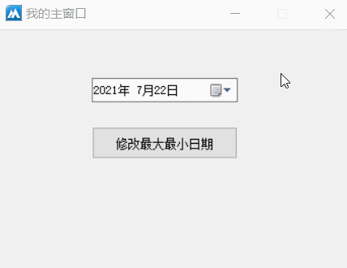
● 选择日期被改变(事件)
帮助文档如下图：
当日期框的日期被选择时将触发本事件，可通过“今天”读属性读取当前选择的日期。
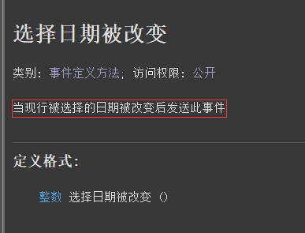
代码编写如下图：
添加本事件后利用“时间到文本()”将小数时间转换成可以被正常阅读的文本时间。
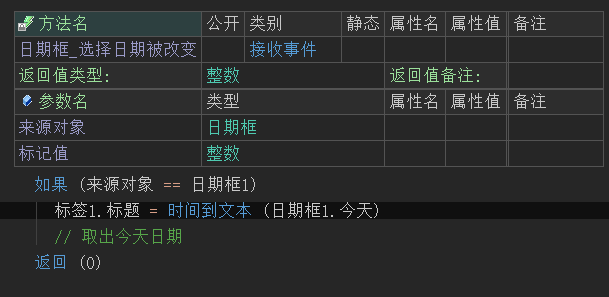
运行效果如下图：
最终可看到当日期被选择后标签会同步显示当前选择的时间。
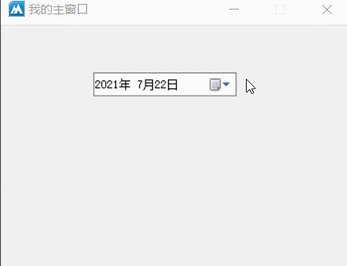
● 格式化日期显示
代码编写如下图：
如果你想让日期框显示格式化日期显示，例如：yyyy/MM/dd HH:mm:ss ddd的格式。
可以利用窗口组件的“发送消息()”方法实现，发送多字节指针给日期框组件。
参数1：固定填写4101。
参数2：固定填写0。
参数3：必须提供文本到多字节指针。
因为消息内容只能接收多字节指针，注意“文本到多字节()”方法的参数2要提供假。
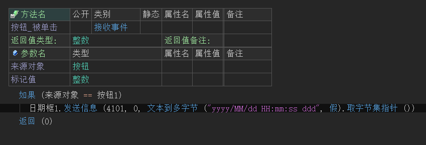
运行效果如下图：
最终可看到日期框的日期可以显示时分秒和周几。
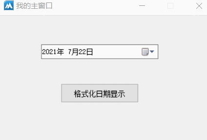